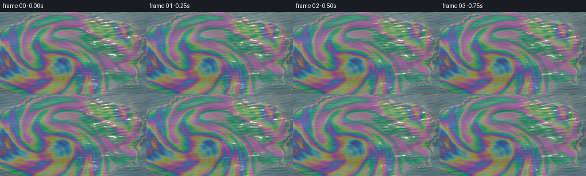
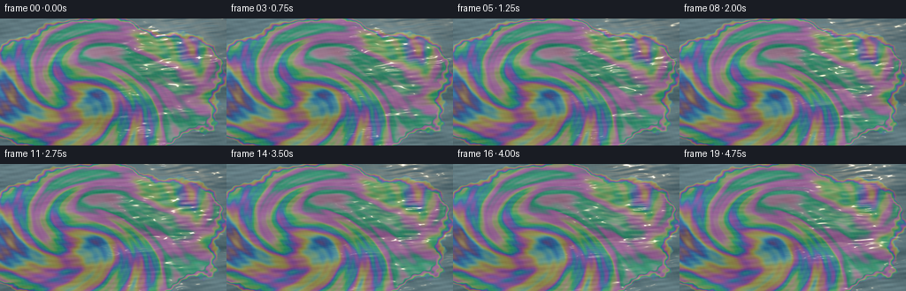
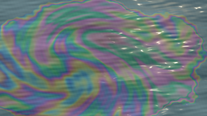

CODING AGENTS AS PIXEL WORLD MODELS
traex/GPT-6.1-Sol · phygen_084
点击播放 · 原生 RGB 像素
逐轮保存的候选
回放视频、检查图与代码变化。
每份候选均可单独播放。实际图片检查记录在下方工具轨迹中。
候选 01播放与检查图
点击播放 · 原生 RGB 像素


展开代码变化
--- 上一保存版本
+++ 本次保存版本
@@ -0,0 +1,131 @@
+"""Procedural sunlight and thin-film interference on gently moving water."""
+from pathlib import Path
+import numpy as np
+from PIL import Image
+import artifact_io
+
+ROOT = Path(__file__).resolve().parent
+W, H, SCALE = 256, 144, 3
+WW, HH = W*SCALE, H*SCALE
+Y, X = np.mgrid[0:HH,0:WW].astype(np.float64)
+x = (X+.5)/WW
+# Surface seen at an oblique angle: the distant ripples are compressed.
+y = (Y+.5)/HH
+rng = np.random.default_rng(84)
+
+# Smooth spectral colours (approximate CIE 1931 colour matching functions).
+lam = np.arange(390., 731., 5.)
+def gaussian(v, mu, left, right):
+ z=(v-mu)*np.where(v<mu,left,right)
+ return np.exp(-.5*z*z)
+cmf=np.stack([
+ 1.056*gaussian(lam,599.8,.0264,.0323)+.362*gaussian(lam,442.,.0624,.0374)-.065*gaussian(lam,501.1,.049,.0382),
+ .821*gaussian(lam,568.8,.0213,.0247)+.286*gaussian(lam,530.9,.0613,.0322),
+ 1.217*gaussian(lam,437.,.0845,.0278)+.681*gaussian(lam,459.,.0385,.0725)
+],axis=1)
+xyz_to_rgb=np.array([[3.2406,-1.5372,-.4986],[-.9689,1.8758,.0415],[.0557,-.204,1.057]])
+# White balance and a softly directional illumination spectrum.
+light=(lam/550.)**-.55
+norm=(light[:,None]*cmf).sum(axis=0)
+thickness=np.linspace(0.,1700.,8192)
+phase=4*np.pi*1.425*thickness[:,None]*.78/lam[None,:]
+# Interference from the air/gasoline and gasoline/water boundaries.
+spectrum=.54-.45*np.cos(phase)
+xyz=(spectrum*light)@cmf/norm[None,:]
+xyz*=np.array([.95047,1.,1.08883])[None,:]
+lookup=np.clip(xyz@xyz_to_rgb.T,0,1.65)
+# Normalize perceived lightness so contours retain rich but natural colour.
+lookup=np.clip(lookup,0,1.)
+
+# Water waves: several coherent scales, with long and short capillary waves.
+waves=[]
+for j in range(38):
+ k=rng.uniform(6,24) if j<12 else rng.uniform(26,110)
+ theta=rng.uniform(0,np.pi)
+ kx=k*np.cos(theta); ky=k*np.sin(theta)*1.8
+ amp=(.027 if j<12 else .0055)/np.sqrt(k/8)
+ phase0=rng.uniform(0,2*np.pi)
+ speed=rng.uniform(.22,.68)*np.sqrt(k/8)
+ waves.append((kx,ky,amp,phase0,speed))
+
+# A large broken-edged, spreading patch, rather than a round droplet.
+def film_coordinates(t):
+ u=x+.010*np.sin(8*y-.35*t)+.006*t/5
+ v=y+.012*np.sin(6*x+.25*t)-.004*t/5
+ # Two weak vortices stretch the same material into marbled whorls.
+ for cx,cy,amount,radius in [(.34,.58,1.8,.29),(.69,.48,-1.2,.24)]:
+ dx=u-cx;dy=(v-cy)*.69
+ r2=dx*dx+dy*dy
+ a=amount*np.exp(-r2/radius**2)
+ u=cx+dx*np.cos(a)-dy*np.sin(a)
+ v=cy+(dx*np.sin(a)+dy*np.cos(a))/.69
+ return u,v
+
+def render(t):
+ elevation=np.zeros_like(x); nx=np.zeros_like(x); ny=np.zeros_like(x)
+ for kx,ky,amp,ph,sp in waves:
+ a=kx*x+ky*y+ph-sp*t
+ elevation+=amp*np.sin(a)
+ nx+=amp*kx*np.cos(a)*.115
+ ny+=amp*ky*np.cos(a)*.115
+ # Continuous sky reflected in the small slopes of the surface.
+ slow=.5+.5*np.sin(3.4*x+4.5*y+.1*t)
+ shade=np.clip(.53+ny*.72+nx*.19+elevation*1.2,.04,.99)
+ dark=np.array([.019,.049,.065])
+ bright=np.array([.20,.32,.35])
+ water=dark[None,None,:]+shade[...,None]*(bright-dark)[None,None,:]
+ water*= (.83+.17*slow)[...,None]
+ # Very soft cloud/sky contrast, no hard outlines.
+ water += (.022*np.sin(9*x+3*y+elevation*8))[...,None]*np.array([.65,.85,1.])
+
+ u,v=film_coordinates(t)
+ dx=(x-.435)/.59; dy=(y-.56)/.57
+ outline=dx*dx+dy*dy
+ outline+= .10*np.sin(11*x+6*y)+.065*np.sin(22*x-11*y)+.028*np.sin(49*x+39*y)
+ outline+= .016*np.sin(100*x-73*y+.4*t)+.006*np.sin(223*x+121*y)
+ # Patch has an uneven, delicately tapering margin.
+ coverage=np.clip((1.00-outline)/.055,0,1)
+ coverage=coverage*coverage*(3-2*coverage)
+ margin=np.clip((1.03-outline)/.18,0,1)
+
+ # Thickness changes smoothly and is advected with the film, not blinking.
+ d=425+390*u+130*np.sin(7*u-5*v)+98*np.sin(12*u+10*v)
+ d+=43*np.sin(25*u-13*v)+20*np.sin(42*u+21*v)
+ d+=18*np.sin(70*u-34*v)+10*np.sin(97*u+60*v)
+ d+= 9*elevation+6*np.sin(6*x+3*y-.16*t)
+ d*=.35+.65*margin
+ # A slowly evolving angle shifts the interference subtly with water movement.
+ d*=1+.028*ny+.011*nx
+ indices=np.clip(d/1700*(len(lookup)-1),0,len(lookup)-1)
+ lo=indices.astype(int);fr=indices-lo
+ color=lookup[lo]*(1-fr[...,None])+lookup[np.minimum(lo+1,len(lookup)-1)]*fr[...,None]
+ # Rich reflected film colour remains integrated with the water's shading.
+ film=water*.38+color*(.21+.15*shade[...,None])
+ film*= (.82+.18*slow)[...,None]
+ out=water*(1-coverage[...,None])+film*coverage[...,None]
+
+ # Direct sunlight: a narrow, broken path of specular reflections at upper right.
+ sun_path=np.exp(-((x-(.81-.075*y))/.155)**2-((y-.22)/.60)**2)
+ target_x=.09+.10*(x-.75)
+ target_y=.06+.07*(y-.24)
+ spec=np.exp(-((nx-target_x)/.026)**2-((ny-target_y)/.020)**2)
+ sparkle=spec*sun_path
+ # Broader gold reflection under the small saturated highlights.
+ broad=np.exp(-((nx-target_x)/.17)**2-((ny-target_y)/.12)**2)*sun_path
+ out+=broad[...,None]*np.array([.20,.145,.07])[None,None,:]
+ out+=sparkle[...,None]*np.array([3.0,2.65,1.9])[None,None,:]
+ # Fine coherent texture, deliberately much subtler than the interference bands.
+ texture=.004*(np.sin(260*x+140*y-.8*t)*np.sin(164*x-217*y+.45*t))
+ out+=texture[...,None]
+ # Photographic tone response and a quiet lens vignette.
+ vignette=np.clip(1-.13*((x-.5)**2+(y-.5)**2),.8,1)
+ out*=vignette[...,None]
+ out=np.clip(out,0,1)
+ out=np.where(out<=.0031308,12.92*out,1.055*np.power(out,1/2.4)-.055)
+ im=Image.fromarray(np.uint8(np.clip(out*255+.5,0,255)), 'RGB')
+ return np.array(im.resize((W,H),Image.Resampling.LANCZOS))
+
+if __name__=='__main__':
+ frames=np.stack([render(i/4.) for i in range(20)])
+ artifact_io.save(frames,ROOT)
+ print('Saved',frames.shape, 'RGB video frames to',ROOT)
候选 02播放与检查图
点击播放 · 原生 RGB 像素

展开代码变化
--- 上一保存版本
+++ 本次保存版本
@@ -53,7 +53,7 @@
u=x+.010*np.sin(8*y-.35*t)+.006*t/5
v=y+.012*np.sin(6*x+.25*t)-.004*t/5
# Two weak vortices stretch the same material into marbled whorls.
- for cx,cy,amount,radius in [(.34,.58,1.8,.29),(.69,.48,-1.2,.24)]:
+ for cx,cy,amount,radius in [(.34,.58,1.45,.29),(.69,.48,-.9,.24)]:
dx=u-cx;dy=(v-cy)*.69
r2=dx*dx+dy*dy
a=amount*np.exp(-r2/radius**2)
@@ -92,6 +92,10 @@
d=425+390*u+130*np.sin(7*u-5*v)+98*np.sin(12*u+10*v)
d+=43*np.sin(25*u-13*v)+20*np.sin(42*u+21*v)
d+=18*np.sin(70*u-34*v)+10*np.sin(97*u+60*v)
+ # Irregular thickness mottling disrupts ideal geometric bands.
+ d+=48*np.sin(17*u+13*v+1.8*np.sin(7*v-4*u))
+ d+=29*np.sin(31*u-26*v+1.2*np.sin(12*u+10*v))
+ d+=14*np.sin(67*u+40*v+1.6*np.sin(22*v))
d+= 9*elevation+6*np.sin(6*x+3*y-.16*t)
d*=.35+.65*margin
# A slowly evolving angle shifts the interference subtly with water movement.
@@ -100,7 +104,8 @@
lo=indices.astype(int);fr=indices-lo
color=lookup[lo]*(1-fr[...,None])+lookup[np.minimum(lo+1,len(lookup)-1)]*fr[...,None]
# Rich reflected film colour remains integrated with the water's shading.
- film=water*.38+color*(.21+.15*shade[...,None])
+ film=water*.60+color*(.12+.16*shade[...,None])
+ film*=np.clip(.93+.42*ny+.12*nx,.65,1.22)[...,None]
film*= (.82+.18*slow)[...,None]
out=water*(1-coverage[...,None])+film*coverage[...,None]
@@ -122,7 +127,7 @@
out*=vignette[...,None]
out=np.clip(out,0,1)
out=np.where(out<=.0031308,12.92*out,1.055*np.power(out,1/2.4)-.055)
- im=Image.fromarray(np.uint8(np.clip(out*255+.5,0,255)), 'RGB')
+ im=Image.fromarray(np.uint8(np.clip(out*255+.5,0,255)))
return np.array(im.resize((W,H),Image.Resampling.LANCZOS))
if __name__=='__main__':
候选 03播放与检查图
可观测工具轨迹
实际执行的命令与返回图片。
命令 1exit 0
/bin/bash -lc "ls -la && cat prompt.txt && printf '\\n---RULES---\\n' && cat GENERATION_RULES.md && printf '\\n---SPEC---\\n' && cat task_spec.json"
命令 2exit 0
/bin/bash -lc 'cat artifact_io.py'
命令 3exit 0
/bin/bash -lc "cat > generate.py <<'PY'
\"\"\"Procedural sunlight and thin-film interference on gently moving water.\"\"\"
from pathlib import Path
import numpy as np
from PIL import Image
import artifact_io
ROOT = Path(__file__).resolve().parent
W, H, SCALE = 256, 144, 3
WW, HH = W*SCALE, H*SCALE
Y, X = np.mgrid[0:HH,0:WW].astype(np.float64)
x = (X+.5)/WW
# Surface seen at an oblique angle: the distant ripples are compressed.
y = (Y+.5)/HH
rng = np.random.default_rng(84)
# Smooth spectral colours (approximate CIE 1931 colour matching functions).
lam = np.arange(390., 731., 5.)
def gaussian(v, mu, left, right):
z=(v-mu)*np.where(v<mu,left,right)
return np.exp(-.5*z*z)
cmf=np.stack([
1.056*gaussian(lam,599.8,.0264,.0323)+.362*gaussian(lam,442.,.0624,.0374)-.065*gaussian(lam,501.1,.049,.0382),
.821*gaussian(lam,568.8,.0213,.0247)+.286*gaussian(lam,530.9,.0613,.0322),
1.217*gaussian(lam,437.,.0845,.0278)+.681*gaussian(lam,459.,.0385,.0725)
],axis=1)
xyz_to_rgb=np.array([[3.2406,-1.5372,-.4986],[-.9689,1.8758,.0415],[.0557,-.204,1.057]])
# White balance and a softly directional illumination spectrum.
light=(lam/550.)**-.55
norm=(light[:,None]*cmf).sum(axis=0)
thickness=np.linspace(0.,1700.,8192)
phase=4*np.pi*1.425*thickness[:,None]*.78/lam[None,:]
# Interference from the air/gasoline and gasoline/water boundaries.
spectrum=.54-.45*np.cos(phase)
xyz=(spectrum*light)@cmf/norm[None,:]
xyz*=np.array([.95047,1.,1.08883])[None,:]
lookup=np.clip(xyz@xyz_to_rgb.T,0,1.65)
# Normalize perceived lightness so contours retain rich but natural colour.
lookup=np.clip(lookup,0,1.)
# Water waves: several coherent scales, with long and short capillary waves.
waves=[]
for j in range(38):
k=rng.uniform(6,24) if j<12 else rng.uniform(26,110)
theta=rng.uniform(0,np.pi)
kx=k*np.cos(theta); ky=k*np.sin(theta)*1.8
amp=(.027 if j<12 else .0055)/np.sqrt(k/8)
phase0=rng.uniform(0,2*np.pi)
speed=rng.uniform(.22,.68)*np.sqrt(k/8)
waves.append((kx,ky,amp,phase0,speed))
# A large broken-edged, spreading patch, rather than a round droplet.
def film_coordinates(t):
u=x+.010*np.sin(8*y-.35*t)+.006*t/5
v=y+.012*np.sin(6*x+.25*t)-.004*t/5
# Two weak vortices stretch the same material into marbled whorls.
for cx,cy,amount,radius in [(.34,.58,1.8,.29),(.69,.48,-1.2,.24)]:
dx=u-cx;dy=(v-cy)*.69
r2=dx*dx+dy*dy
a=amount*np.exp(-r2/radius**2)
u=cx+dx*np.cos(a)-dy*np.sin(a)
v=cy+(dx*np.sin(a)+dy*np.cos(a))/.69
return u,v
def render(t):
elevation=np.zeros_like(x); nx=np.zeros_like(x); ny=np.zeros_like(x)
for kx,ky,amp,ph,sp in waves:
a=kx*x+ky*y+ph-sp*t
elevation+=amp*np.sin(a)
nx+=amp*kx*np.cos(a)*.115
ny+=amp*ky*np.cos(a)*.115
# Continuous sky reflected in the small slopes of the surface.
slow=.5+.5*np.sin(3.4*x+4.5*y+.1*t)
shade=np.clip(.53+ny*.72+nx*.19+elevation*1.2,.04,.99)
dark=np.array([.019,.049,.065])
bright=np.array([.20,.32,.35])
water=dark[None,None,:]+shade[...,None]*(bright-dark)[None,None,:]
water*= (.83+.17*slow)[...,None]
# Very soft cloud/sky contrast, no hard outlines.
water += (.022*np.sin(9*x+3*y+elevation*8))[...,None]*np.array([.65,.85,1.])
u,v=film_coordinates(t)
dx=(x-.435)/.59; dy=(y-.56)/.57
outline=dx*dx+dy*dy
outline+= .10*np.sin(11*x+6*y)+.065*np.sin(22*x-11*y)+.028*np.sin(49*x+39*y)
outline+= .016*np.sin(100*x-73*y+.4*t)+.006*np.sin(223*x+121*y)
# Patch has an uneven, delicately tapering margin.
coverage=np.clip((1.00-outline)/.055,0,1)
coverage=coverage*coverage*(3-2*coverage)
margin=np.clip((1.03-outline)/.18,0,1)
# Thickness changes smoothly and is advected with the film, not blinking.
d=425+390*u+130*np.sin(7*u-5*v)+98*np.sin(12*u+10*v)
d+=43*np.sin(25*u-13*v)+20*np.sin(42*u+21*v)
d+=18*np.sin(70*u-34*v)+10*np.sin(97*u+60*v)
d+= 9*elevation+6*np.sin(6*x+3*y-.16*t)
d*=.35+.65*margin
# A slowly evolving angle shifts the interference subtly with water movement.
d*=1+.028*ny+.011*nx
indices=np.clip(d/1700*(len(lookup)-1),0,len(lookup)-1)
lo=indices.astype(int);fr=indices-lo
color=lookup[lo]*(1-fr[...,None])+lookup[np.minimum(lo+1,len(lookup)-1)]*fr[...,None]
# Rich reflected film colour remains integrated with the water's shading.
film=water*.38+color*(.21+.15*shade[...,None])
film*= (.82+.18*slow)[...,None]
out=water*(1-coverage[...,None])+film*coverage[...,None]
# Direct sunlight: a narrow, broken path of specular reflections at upper right.
sun_path=np.exp(-((x-(.81-.075*y))/.155)**2-((y-.22)/.60)**2)
target_x=.09+.10*(x-.75)
target_y=.06+.07*(y-.24)
spec=np.exp(-((nx-target_x)/.026)**2-((ny-target_y)/.020)**2)
sparkle=spec*sun_path
# Broader gold reflection under the small saturated highlights.
broad=np.exp(-((nx-target_x)/.17)**2-((ny-target_y)/.12)**2)*sun_path
out+=broad[...,None]*np.array([.20,.145,.07])[None,None,:]
out+=sparkle[...,None]*np.array([3.0,2.65,1.9])[None,None,:]
# Fine coherent texture, deliberately much subtler than the interference bands.
texture=.004*(np.sin(260*x+140*y-.8*t)*np.sin(164*x-217*y+.45*t))
out+=texture[...,None]
# Photographic tone response and a quiet lens vignette.
vignette=np.clip(1-.13*((x-.5)**2+(y-.5)**2),.8,1)
out*=vignette[...,None]
out=np.clip(out,0,1)
out=np.where(out<=.0031308,12.92*out,1.055*np.power(out,1/2.4)-.055)
im=Image.fromarray(np.uint8(np.clip(out*255+.5,0,255)), 'RGB')
return np.array(im.resize((W,H),Image.Resampling.LANCZOS))
if __name__=='__main__':
frames=np.stack([render(i/4.) for i in range(20)])
artifact_io.save(frames,ROOT)
print('Saved',frames.shape, 'RGB video frames to',ROOT)
PY
python generate.py"命令 4exit 0
/bin/bash -lc "python - <<'PY'
p='generate.py'
s=open(p).read().replace(\"(.34,.58,1.8,.29),(.69,.48,-1.2,.24)\",\"(.34,.58,1.45,.29),(.69,.48,-.9,.24)\")
s=s.replace(\"d+=18*np.sin(70*u-34*v)+10*np.sin(97*u+60*v)\",\"\"\"d+=18*np.sin(70*u-34*v)+10*np.sin(97*u+60*v)
# Irregular thickness mottling disrupts ideal geometric bands.
d+=48*np.sin(17*u+13*v+1.8*np.sin(7*v-4*u))
d+=29*np.sin(31*u-26*v+1.2*np.sin(12*u+10*v))
d+=14*np.sin(67*u+40*v+1.6*np.sin(22*v))\"\"\")
s=s.replace(\"film=water*.38+color*(.21+.15*shade[...,None])\",\"film=water*.60+color*(.12+.16*shade[...,None])\\n film*=np.clip(.93+.42*ny+.12*nx,.65,1.22)[...,None]\")
s=s.replace(\"Image.fromarray(np.uint8(np.clip(out*255+.5,0,255)), 'RGB')\",\"Image.fromarray(np.uint8(np.clip(out*255+.5,0,255)))\")
open(p,'w').write(s)
PY
python generate.py"视觉工具实际返回图片 1

视觉工具实际返回图片 2

保存候选 3 份；完成命令 4 次；可验证图片返回 2 张。原始 API 响应与完整日志保留在本地。